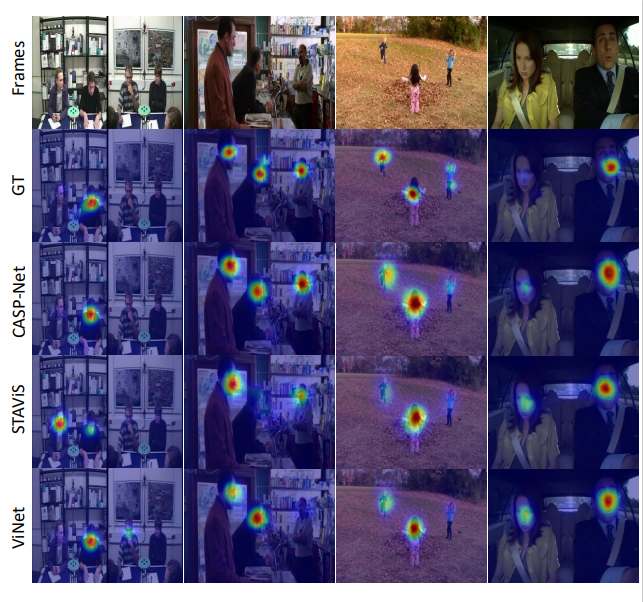

|  |
@inproceedings{xiong2023casp,
title={CASP-Net: Rethinking Video Saliency Prediction from an Audio-Visual Consistency Perceptual Perspective},
author={Junwen Xiong, Ganglai Wang, Peng Zhang, Wei Huang, Yufei Zha and Guangtao Zhai},
booktitle={Proceedings of the IEEE/CVF Conference on Computer Vision and Pattern Recognition},
year={2023}
}